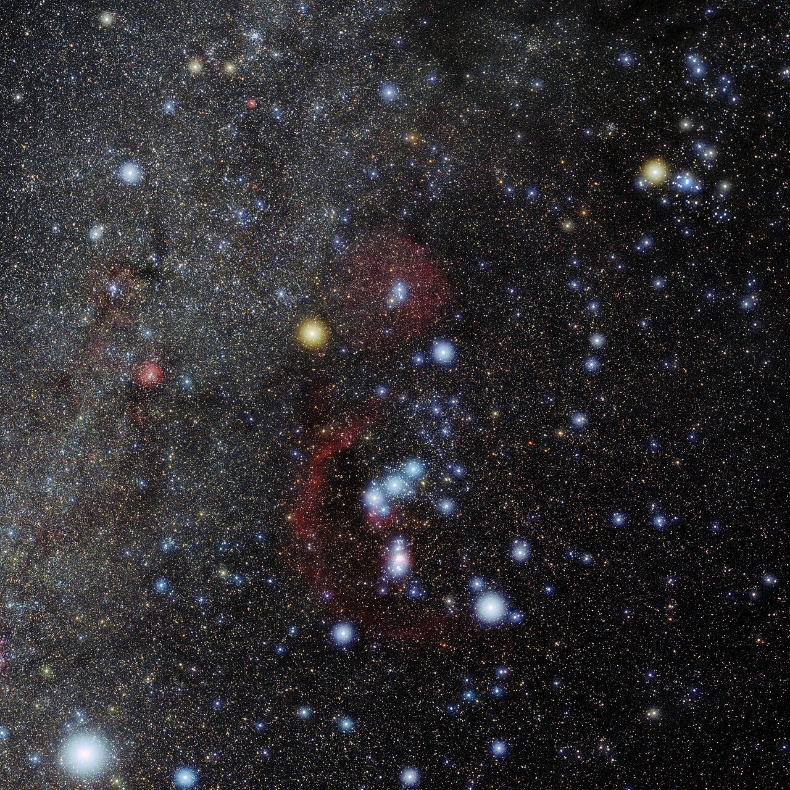
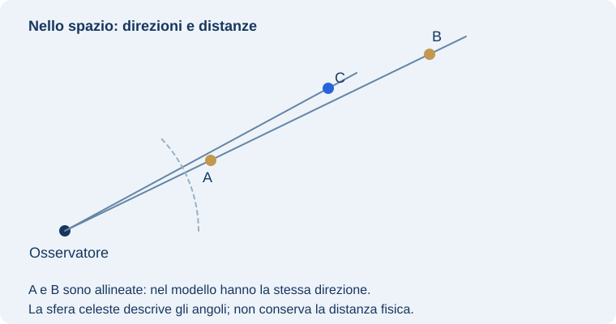

1. Dal gruppo di punti alla figura riconoscibile
Una carta aggiunge alle stelle un linguaggio grafico. I punti indicano direzioni; la loro grandezza suggerisce la brillantezza apparente, non il diametro reale. Le linee uniscono stelle scelte per riconoscere una figura. I confini IAU, quando presenti, delimitano invece le regioni ufficiali. Una costellazione è quindi una regione del cielo: la figura tradizionale occupa soltanto parte di quella regione.
La figura fissa resta disponibile nel collegamento. Nascondi le linee per provare il riconoscimento delle stelle.
Per imparare Orione, cerca prima la Cintura, poi le stelle che definiscono spalle e piedi. Nascondi le linee e controlla se sai ritrovare la figura dalle sole separazioni. Per Pegaso, cerca il grande quadrilatero e verifica il vertice condiviso dalla figura tradizionale con Andromeda. I disegni aiutano a ricordare, ma non dimostrano un legame gravitazionale fra tutte le stelle coinvolte.
La magnitudine apparente esprime quanto flusso luminoso riceviamo: valori più piccoli indicano oggetti più brillanti. Cinque magnitudini corrispondono a un fattore cento nel flusso. Non puoi dedurre la distanza soltanto dalla brillantezza: entrano anche la luminosità intrinseca e l’assorbimento. Sulla carta i simboli delle stelle sono convenzioni, non dischi da confrontare come fotografie di pianeti.
Percorso ispirato all’articolo di Fabio Rocca, Impariamo il cielo — Prima dell’oculare, fornito dall’autore per AD ASTRA. Spiegazione rielaborata per questa lezione.
Riferimenti: INAF OAS · Costellazioni · INAF Trieste · Il cielo, dispensa didattica
2. Figure riconoscibili e regioni ufficiali
Nel linguaggio comune una costellazione è spesso il disegno formato da alcune stelle. In astronomia moderna è una regione delimitata della sfera celeste. Le 88 costellazioni ufficiali coprono l’intero cielo: qualsiasi direzione appartiene a una di esse, anche quando non coincide con una delle stelle che ne suggeriscono la figura.
Un asterismo è una figura riconoscibile che non deve necessariamente coincidere con una costellazione. Il Grande Carro è parte dell’Orsa Maggiore; il Triangolo Estivo usa Vega, Deneb e Altair, appartenenti a tre costellazioni differenti.
Riferimenti: INAF OAS · Costellazioni · INAF Trieste · Il cielo, dispensa didattica
3. Il disegno non è un gruppo fisico

E. Slawik/NOIRLab/NSF/AURA/M. Zamani · CC BY 4.0
La nostra visuale proietta stelle poste a distanze diverse. Alcune possono appartenere a una stessa associazione stellare, ma il fatto di comparire nel medesimo disegno non dimostra questa appartenenza. Per stabilirla si studiano distanze, movimenti e altre proprietà.

Da un punto molto lontano dal Sistema Solare, le forme familiari potrebbero apparire diverse. Cambiando il punto di osservazione cambia la proiezione, anche senza modificare istantaneamente la posizione fisica delle stelle.
Riferimenti: Treccani · Coordinate astronomiche, lezione PDF
4. Un punto di vista può cambiare una figura
Muovendo l’osservatore del laboratorio cambia la direzione da cui vede i punti A, B e C. Le loro posizioni nel modello spaziale restano fisse, ma la figura proiettata si modifica. È un’esperienza geometrica per distinguere l’oggetto dalla sua rappresentazione.
Gli spostamenti mostrati sono grandi rispetto alle distanze del modello, proprio per rendere visibile l’effetto. Non rappresentano il cambiamento percepibile a occhio nudo facendo pochi passi sulla Terra. Le stelle reali sono tanto lontane che la prospettiva da punti vicini del nostro pianeta cambia pochissimo.
Il laboratorio non è una ricostruzione tridimensionale di Orione: usa punti ipotetici. La fotografia, invece, mostra una regione reale del cielo. Tenere separate le due funzioni permette di usare il modello per capire il principio senza attribuire ai suoi punti distanze stellari inventate.
Riferimenti: Treccani · Coordinate astronomiche, lezione PDF · INAF Trieste · Il cielo, dispensa didattica
5. Che cosa dimostra un’associazione fisica
La vicinanza apparente è un indizio per cercare, non una prova di appartenenza a uno stesso gruppo. Per studiare un’associazione stellare si confrontano distanze, movimenti e proprietà fisiche. Stelle nate in un ambiente comune possono condividere caratteristiche, ma un disegno tracciato dall’osservatore non basta a stabilirlo.
Occorre distinguere anche una coppia prospettica da un sistema legato gravitazionalmente. Nel primo caso due punti possono comparire vicini per allineamento; nel secondo si studia il loro legame dinamico. Una semplice foto può suggerire la domanda, mentre la risposta richiede osservazioni ulteriori.
Le figure tradizionali possono includere stelle con storie differenti. Questo non le rende inutili: il loro compito è orientare e denominare. Una costellazione non è un modello della nascita delle stelle, così come la pianta di una città non spiega da sola la storia geologica del territorio.
Riferimenti: INAF Trieste · Il cielo, dispensa didattica · INAF OAS · Costellazioni
6. Nomi per condividere le osservazioni
La figura è utile per cercare un oggetto, ma una comunicazione precisa usa anche il nome della regione e le coordinate. Dire che una nebulosa è “in Orione” descrive la sua direzione nel cielo, non la distanza né l’esistenza di una superficie materiale chiamata Orione.
Le denominazioni storiche raccontano come le culture hanno interpretato il cielo. Le regioni convenzionali permettono invece a osservatori diversi di usare una nomenclatura comune. Le due prospettive possono convivere, purché una narrazione mitologica non sostituisca la spiegazione fisica.
Riferimenti: INAF Trieste · Il cielo, dispensa didattica · INAF OAS · Costellazioni
7. Confini, disegni e nomi: tre informazioni
Su una carta puoi trovare i confini di una regione, linee che suggeriscono una figura e nomi dei suoi oggetti. Sono tre livelli di informazione differenti. Un punto può appartenere alla regione ufficiale pur trovandosi lontano dalle linee del disegno più familiare.
Quando confronti atlanti, non allarmarti se le linee di collegamento non sono identiche. La figura grafica può variare; la regione ufficiale serve invece come riferimento comune. La carta deve chiarire quali tratti siano confini e quali aiuti al riconoscimento.
Imparare i nomi delle stelle più evidenti facilita l’orientamento, ma non elimina il bisogno di coordinate quando vuoi identificare un oggetto debole o comunicare una posizione precisa. La costellazione fornisce una regione di ricerca; le coordinate specificano una direzione all’interno del sistema scelto.
Riferimenti: INAF OAS · Costellazioni · INAF Trieste · Il cielo, dispensa didattica
8. Confronto guidato e verifica
Esplora Orione e scegli due stelle riconoscibili. Descrivi la loro separazione apparente, poi formula la domanda a cui la foto non risponde: quale distanza fisica le separa? Confronta la regione dell’atlante con il laboratorio di prospettiva e spiega perché i punti del modello non possono essere identificati automaticamente con le stelle della foto.
Che cosa deve comparire nella risposta
La fotografia fornisce direzioni proiettate; il modello rende evidente come il punto di vista le influenzi. Non basta la somiglianza di una figura per trasferire distanze o relazioni fisiche. Confine ufficiale, asterismo e gruppo stellare non sono sinonimi.
9. Dal disegno alla carta
Scegli Orione e identifica tre stelle nella foto e nella carta. Distingui la figura a linee dai confini ufficiali della costellazione. Poi cerca un oggetto debole nella stessa regione: appartiene al disegno visibile a occhio nudo oppure alla regione più ampia delimitata sulla carta?
Testo originale AD ASTRA, sviluppato dal quadro didattico ricavato dal confronto di circa 60 risorse e verificato sui riferimenti pertinenti indicati in questa lezione. Le fotografie mostrano soggetti reali; i diagrammi spiegano il modello e dichiarano le semplificazioni.